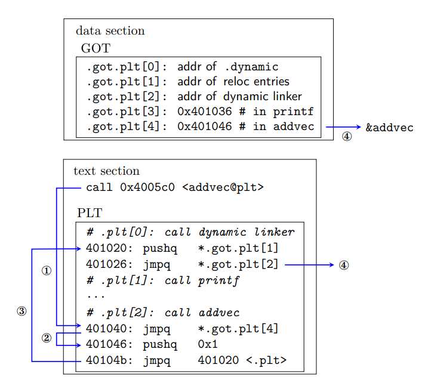

3. dynamic linking
1. 动态链接🧐
静态链接在一定程度上提高了模块化的效率，但:
- 浪费内存: 基本上每个 C 程序的代码段都有标准 I/O 函数
- 不易更新: 如果某个模块
_.o更新，可能需要整个项目重新编译
共享库是致力于解决静态库缺陷的现代产物。"共享" 体现在于:
- 同一个项目下只需要
_.so的一个副本 - 不同进程在内存中共享
_.so的.text节
int addcnt = 0;
void addvec(int *x, int *y, int *z, int n) {
int i;
addcnt++;
for (i = 0; i < n; ++i)
z[i] = x[i] + y[i];
}
int multcnt = 0;
void multvec(int *x, int *y, int *z, int n) {
int i;
multcnt++;
for (i = 0; i < n; ++i)
z[i] = x[i] * y[i];
}
#include <stdio.h>
#include "vector.h"
int x[2] = {1, 2};
int y[2] = {3, 4};
int z[2];
int main() {
addvec(x, y, z, 2);
printf("z = [%d %d]\n", z[0], z[1]);
return 0;
}
仍以这部分程序为例，先通过链接创建共享库，在将它链接到可执行程序中:
$ gcc -shared -fpic -o libvector.so addvec.c multvec.c
$ gcc -no-pie -o progd main.c ./libvector.so
动态链接的程序的执行逻辑为:
- 先执行部分链接，复制一些符号表和重定位信息，方便运行时解析对
_.so的引用- 例如，
progd在运行前可以确定需要重定位的动态符号、PLT 条目和部分 GOT 条目
- 例如，
- 运行
prog后，loader 先把控制传递给动态链接器，执行动态链接:- 以
prog为根结点 BFS，装载所有共享对象，合并它们的符号表，获得全局符号表 (确定运行时地址、解决符号冲突、填写重定位节) - 重定位
prog和各个模块的 GOT 表和 PLT 表，解析符号引用 - 重定位后，如果某个模块有
.init段，执行它
- 以
- 将控制传递给
prog，程序开始运行
实践证明，动态链接会损失 1% ~ 5% 的效率，但就换来的好处而言是值得的
2. 位置无关代码🧐
位置无关代码 (position-independent code): 可以在主存任意位置运行，不受绝对地址影响的代码
(1). Global Offset Table🧐
加载后再执行重定位的难点在于:
- 位置无关的，i.e. 编译时不确定
_.so的内存地址，可以被加载到内存的任何位置不影响使用 - 不同进程共享
_.so的代码段.text，且进程代码区只读
早期共享库在运行前就预先分配固定的内存地址，虽然简化了链接，但内存管理十分混乱
基本思路是把代码段重定位时需要修改的地方分离到数据段。ELF 的做法是：
- 在数据段建立一个指针数组 —— 全局偏移表 (GOT)
- 由于代码段和数据段距离固定，编译时可以让代码段中需要重定位的部分通过相对偏移指向 GOT
这样，运行时 dl 确定各符号地址后，修改 GOT 进行重定位；不同进程共享 _.so 的代码段，使用不同的数据段。
note
- 经测试 (
gcc 10.2)，不管全局变量是否被外部动态引用，都放在.data段，重定位原理是不变的 - dl 由 BFS 构造全局符号表时，后来的符号会被先前的同名符号覆盖；猜测静态链接之所以有弱符号是历史原因，dl 由于
LD_PRELOAD的存在，符号覆盖更加方便
(2). Lazy Binding & Procedure Linkage Table🧐
可能有很多函数根本执行不到 (例如一些错误处理函数)，重定位时把所有函数全部链接好是没有必要的，由此 GNU 采用延迟绑定 (lazy binding) 对动态链接进行优化。基本思路为:
- 直到第一次调用函数 $f$ 时，以 reloc entry 为参数调用 dl，执行重定位
代码区额外定义了一个过程链接表 (PLT)，通过 GOT 和 PLT 的协作实现对函数的延迟绑定。具体实现上， ELF 将 .got 拆分成两个部分:
.got.plt: 保存函数的地址.got.plt[0]: addr of.dynamicsection.got.plt[1]: addr of reloc entries.got.plt[2]: 动态链接器ld-linux.so的入口点
.got: 保存全局变量的地址
example: progd
用 readelf 查看 progd 的 GOT 和 PLT 表 (运行前，关闭栈随机化):
Disassembly of section .plt:
0000000000401020 <.plt>:
401020: ff 35 e2 2f 00 00 pushq 0x2fe2(%rip) # 404008 <_GLOBAL_OFFSET_TABLE_+0x8>
401026: ff 25 e4 2f 00 00 jmpq *0x2fe4(%rip) # 404010 <_GLOBAL_OFFSET_TABLE_+0x10>
40102c: 0f 1f 40 00 nopl 0x0(%rax)
0000000000401030 <printf@plt>:
401030: ff 25 e2 2f 00 00 jmpq *0x2fe2(%rip) # 404018 <printf@GLIBC_2.2.5>
401036: 68 00 00 00 00 pushq $0x0
40103b: e9 e0 ff ff ff jmpq 401020 <.plt>
0000000000401040 <addvec@plt>:
401040: ff 25 da 2f 00 00 jmpq *0x2fda(%rip) # 404020 <addvec>
401046: 68 01 00 00 00 pushq $0x1
40104b: e9 d0 ff ff ff jmpq 401020 <.plt>
$ readelf -x .got.plt progd
NOTE: This section has relocations against it, but these have NOT been applied to this dump.
0x00404000: 003e4000 00000000 00000000 00000000 .>@.............
0x00404010: 00000000 00000000 36104000 00000000 ........6.@.....
0x00404020: 46104000 00000000 F.@.....
$ readelf -x .dynamic progd
0x00403e00 01000000 00000000 66000000 00000000 ........f.......
0x00403e10 01000000 00000000 75000000 00000000 ........u.......
... ...
从中提取信息，总结为下图

在控制交给 progd 后，此时 dl 已经确定了所有函数的运行时地址。当 addvec 第一次被调用时:
- ①. 不直接调用
addvec，先进入它的 PLT 条目.plt[2] - ②. 跳转到
.got.plt[4]，而它指向.plt[2]的第二条指令，等价于执行下一条语句 - ③. 把
addvec的 ID0x1压入栈中，跳转到.plt[0]，把 dl 需要的参数压入栈中 - ④. 间接跳转到 dl 中，此时栈中有
0x1和.got.plt[1]两个参数，dl 根据参数确定addvec的运行时地址，重定位.got.plt[4]，然后把控制交还给addvec
通过 gdb 查看延迟绑定的过程
$ gdb progd
...
$ (gdb) b* 0x401154
Breakpoint 1 at 0x401154
$ (gdb) b* 0x401159
Breakpoint 2 at 0x401159
$ (gdb) run
Breakpoint 1, 0x0000000000401154 in main ()
$ (gdb) info functions ^printf$
0x00007ffff7e1cb10 printf
$ (gdb) info functions ^addvec$
0x00007ffff7fc40e9 addvec
$ (gdb) maint info sections
... ...
[19] 0x00403e00->0x00403fe0 at 0x00002e00: .dynamic ALLOC LOAD DATA HAS_CONTENTS
[20] 0x00403fe0->0x00404000 at 0x00002fe0: .got ALLOC LOAD DATA HAS_CONTENTS
[21] 0x00404000->0x00404028 at 0x00003000: .got.plt ALLOC LOAD DATA HAS_CONTENTS
[22] 0x00404028->0x00404048 at 0x00003028: .data ALLOC LOAD DATA HAS_CONTENTS
[23] 0x00404048->0x00404058 at 0x00003048: .bss ALLOC
... ...
$ (gdb) x/5xg 0x404000
0x404000: 0x0000000000403e00 0x00007ffff7ffe1a0
0x404010: 0x00007ffff7fe7d30 0x0000000000401036
0x404020 <addvec@got.plt>: 0x0000000000401046
$ (gdb) continue
Continuing.
Breakpoint 2, 0x0000000000401159 in main ()
$ (gdb) x/5xg 0x404000
0x404000: 0x0000000000403e00 0x00007ffff7ffe1a0
0x404010: 0x00007ffff7fe7d30 0x0000000000401036
0x404020 <addvec@got.plt>: 0x00007ffff7fc40e9
0000000000401136 <main>:
401136: 55 push %rbp
401137: 48 89 e5 mov %rsp,%rbp
40113a: b9 02 00 00 00 mov $0x2,%ecx
40113f: 48 8d 15 0a 2f 00 00 lea 0x2f0a(%rip),%rdx # 404050 <z>
401146: 48 8d 35 f3 2e 00 00 lea 0x2ef3(%rip),%rsi # 404040 <y>
40114d: 48 8d 3d e4 2e 00 00 lea 0x2ee4(%rip),%rdi # 404038 <x>
401154: e8 e7 fe ff ff callq 401040 <addvec@plt>
401159: 8b 15 f5 2e 00 00 mov 0x2ef5(%rip),%edx # 404054 <z+0x4>
40115f: 8b 05 eb 2e 00 00 mov 0x2eeb(%rip),%eax # 404050 <z>
401165: 89 c6 mov %eax,%esi
401167: 48 8d 3d 96 0e 00 00 lea 0xe96(%rip),%rdi # 402004 <_IO_stdin_used+0x4>
40116e: b8 00 00 00 00 mov $0x0,%eax
401173: e8 b8 fe ff ff callq 401030 <printf@plt>
401178: b8 00 00 00 00 mov $0x0,%eax
40117d: 5d pop %rbp
40117e: c3 retq
40117f: 90 nop
3. 相关数据结构🧐
(1). .interp🧐
动态链接器的路径由 ELF 文件决定，以字符串的形式保存在 .interp 中。
$ readelf -l progd | grep interpreter
[Requesting program interpreter: /lib64/ld-linux-x86-64.so.2]
(2). .dynamic🧐
.dynamic 对动态链接来说是最重要的结构，保存了以下基本信息:
- 可执行程序依赖于哪些共享对象
- 动态链接符号表的位置, 动态链接重定位表的位置
- 共享对象初始化代码的地址 等
typedef struct {
Elf64_Sxword d_tag; /* Dynamic entry type */
union {
Elf64_Xword d_val; /* Integer value */
Elf64_Addr d_ptr; /* Address value */
} d_un;
} Elf64_Dyn;
.dynamic 也是一个结构数组，由类型值 d_tag 和附加的数据组成。一些常见的类型有:
value of d_tag |
meaning of d_un |
|---|---|
DT_SYMTAB |
动态链接符号表的地址，d_ptr 表示 .dynsym 的地址 |
DT_STRTAB |
动态链接字符串表的地址，d_ptr 表示 .dynstr 的地址 |
DT_STRSZ |
动态链接字符串大小，d_val 表示大小 |
DT_HASH |
动态链接 hash 表地址，d_ptr 表示 .hash 的地址 |
DT_INIT |
初始化代码地址 |
DT_NEED |
依赖的共享库文件，d_ptr 表示文件名 |
DT_REL / DT_RELA |
动态链接重定位表地址 |
(3). .dynsym🧐
为了表示 动态链接模块 之间的符号引用关系，ELF 专门定义了一个动态符号表 .dynsym，entry 结构和静态链接相同
- 动态链接模块通常有
symtab和dynsym两个符号表 - 和
.symtab不同的是，.dynsym不保存模块私有静态变量，.dynsym通常是.symtab的子集 - 可以在运行时使用
gdb查看各个符号被 dl 分配的地址
和 .symtab 类似，.dynsym 也有辅助的字符串表 .dynstr
(4). reloc entry🧐
entry 的结构和静态链接一样; .rel.dyn 和 .rel.plt 分别负责修正 .got 和 .got.plt。
$ readelf -r progd
$ readelf -r progd
重定位节 '.rela.dyn' at offset 0x490 contains 4 entries:
偏移量 信息 类型 符号值 符号名称 + 加数
000000403fe0 000100000006 R_X86_64_GLOB_DAT 0000000000000000 _ITM_deregisterTM[...] + 0
000000403fe8 000300000006 R_X86_64_GLOB_DAT 0000000000000000 __libc_start_main@GLIBC_2.2.5 + 0
000000403ff0 000500000006 R_X86_64_GLOB_DAT 0000000000000000 __gmon_start__ + 0
000000403ff8 000600000006 R_X86_64_GLOB_DAT 0000000000000000 _ITM_registerTMCl[...] + 0
重定位节 '.rela.plt' at offset 0x4f0 contains 2 entries:
偏移量 信息 类型 符号值 符号名称 + 加数
000000404018 000200000007 R_X86_64_JUMP_SLO 0000000000000000 printf@GLIBC_2.2.5 + 0
000000404020 000400000007 R_X86_64_JUMP_SLO 0000000000000000 addvec + 0
4. 显式动态链接🧐
Linux 提供了 dynamic linker 的简单接口，允许程序运行时显式加载和链接共享库。
interfaces
#include <dlfcn.h>
/* 加载和链接共享库 filename
* @flag: RTLD_NOW: 立即解析外部符号引用; RTLD_LAZY: 延迟解析.
*/
void *dlopen(const char *filename, int flag);
/* 如果符号存在，返回符号的地址
* @handle: 共享库的句柄
* @symbol: 共享库的符号名
*/
void *dlsym(void *handle, char *symbol);
/* 如果没有其他共享库使用这个共享库，卸载它
*/
int dlclose(void *handle);
/* 返回一个字符串，描述 dlopen, dlsym, dlclose 最近的错误
*/
const char *dlerror(void);
example: 动态链接 libvector.so，并调用 addvec
#include <dlfcn.h>
#include <stdio.h>
#include <stdlib.h>
int x[2] = {1, 2};
int y[2] = {3, 4};
int z[2];
int main() {
void *handle;
void (*addvec)(int *, int *, int *, int);
char *error;
/* dynamically load the shared library containing addvec() */
handle = dlopen("./libvector.so", RTLD_LAZY);
if (!handle) {
fprintf(stderr, "%s\n", dlerror());
exit(1);
}
/* Get a pointer to the addvec() function we just loaded */
addvec = dlsym(handle, "addvec");
if ((error = dlerror()) != NULL) {
fprintf(stderr, "%s\n", error);
exit(1);
}
/* Now we can call addvec() just like any other function */
addvec(x, y, z, 2);
printf("z = [%d %d]\n", z[0], z[1]);
/* Unload the shared library */
if (dlclose(handle) < 0) {
fprintf(stderr, "%s\n", dlerror());
exit(1);
}
return 0;
}
$ gcc -rdynamic -o progd2 dll.c -ldl
5. 库打桩🧐
Linux 支持库打桩 (library interpositioning) 技术，可以截获对共享库函数的调用，执行自己的代码。
(1). 编译时打桩🧐
#include <malloc.h> // local dir
#include <stdio.h>
int main() {
int *p = malloc(32);
free(p);
return 0;
}
#ifdef COMPILETIME
#include <malloc.h> // system dir
#include <stdio.h>
/* malloc wrapper function */
void *mymalloc(size_t size) {
void *ptr = malloc(size);
printf("malloc(%d)=%p\n", (int)size, ptr);
return ptr;
}
/* free wrapper function */
void myfree(void *ptr) {
free(ptr);
printf("free(%p)\n", ptr);
}
#endif
#define malloc(size) mymalloc(size)
#define free(ptr) myfree(ptr)
#include <stdio.h>
void *mymalloc(size_t size);
void myfree(void *ptr);
$ gcc -DCOMPILETIME -c mymalloc.c
$ gcc -I. -o intc int.c mymalloc.o
$ ./intc
malloc(32)=0x5628b97c92a0
free(0x5628b97c92a0)
-I. 告诉 C 预处理器，搜索系统目录之前先在当前目录找 malloc.h
-D 编译时开启某个宏
(2). 链接时打桩🧐
#include <malloc.h> // local dir
#include <stdio.h>
int main() {
int *p = malloc(32);
free(p);
return 0;
}
#ifdef LINKTIME
#include <stdio.h>
void *__real_malloc(size_t size);
void __real_free(void *ptr);
/* malloc wrapper function */
void *__wrap_malloc(size_t size) {
void *ptr = __real_malloc(size); /* call libc malloc */
printf("malloc(%d) = %p\n", (int)size, ptr);
return ptr;
}
/* free wrapper function */
void __wrap_free(void *ptr) {
__real_free(ptr); /* call libc free */
printf("free(%p)\n", ptr);
}
#endif
$ gcc -DLINKTIME -c mymalloc.c
$ gcc -c int.c
$ gcc -Wl,--wrap,malloc -Wl,--wrap,free -o intl int.o mymalloc.o
$ ./intl
malloc(32) = 0x55e39f2d22a0
free(0x55e39f2d22a0)
--wrap f: 把对 f 的引用解析为 __wrap_f，并且把对 __real_f 的引用解析为 f
(3). 运行时打桩🧐
编译时打桩需要能访问源代码，链接时打桩需要能访问目标文件，而运行时打桩只需要能访问可执行文件，依赖于动态链接器的环境变量 LD_PRELOAD:
- 若
LD_PRELOAD设置为一个路径列表，加载一个程序时，ld-linux.so会先搜索LD_PRELOAD的内容，然后再搜索其他的库
因此可以对任何共享库的任何函数打桩，包括 libc.so
#include <malloc.h> // local dir
#include <stdio.h>
int main() {
int *p = malloc(32);
free(p);
return 0;
}
#ifdef RUNTIME
#define _GNU_SOURCE
#include <dlfcn.h>
#include <stdio.h>
#include <stdlib.h>
/* malloc wrapper function */
void *malloc(size_t size) {
void *(*mallocp)(size_t size);
char *error;
mallocp = dlsym(RTLD_NEXT, "malloc"); /* get addr of libc malloc */
if ((error = dlerror()) != NULL) {
fputs(error, stderr);
exit(1);
}
char *ptr = mallocp(size); /* call libc malloc */
fprintf(stderr, "malloc(%d) = %p\n", (int)size, ptr);
return ptr;
}
/* free wrapper function */
void free(void *ptr) {
void (*freep)(void *) = NULL;
char *error;
if (!ptr)
return;
freep = dlsym(RTLD_NEXT, "free"); /* get addr of libc free */
if ((error = dlerror()) != NULL) {
fputs(error, stderr);
exit(1);
}
freep(ptr);
fprintf(stderr, "free(%p)\n", ptr);
}
#endif
$ gcc -DRUNTIME -shared -fpic -o mymalloc.so mymalloc.c -ldl
$ gcc -o intr int.c
$ LD_PRELOAD="./mymalloc.so" ./intr
malloc(32) = 0x55a0927a12a0
free(0x55a0927a12a0)
$ LD_PRELOAD="./mymalloc.so" /usr/bin/uptime
...
mymalloc.c 中不可使用 printf，printf 似乎也会调用 malloc，因而造成无穷递归。